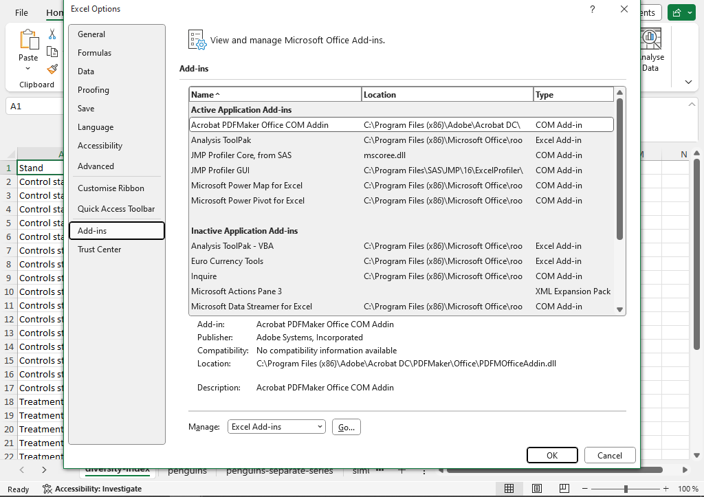

Statistics Exercise 3. Statistical tests and regression models
1 Introduction
In this third and final exercise we look at the most common use of statistics in the sciences – the use of inference to draw statistically significant conclusions from experimental or observational data. Firstly we look at a method to test equality between two different groups (the two-sample t-test) and secondly we look at a method to test for a connection between two numerical variables (simple regression). In order to do this we will also look at an Excel add-in called Analysis Toolpak.
We will use three different datasets: a common example dataset on penguins, the teabag data used in the soil assignment, and some scientific data from a study at the Southern Swedish Forest Research Center.
2 Adding an add-in in Excel
The functionality of Excel can be expanded with add-ins. Some of these come with an Excel installation but need to be activated before use. The exact way to do this may differ a bit between Excel version.
- Open an empty Excel workbook. Go to File in the ribbon at the top. Go to Options at the bottom of the list to the left.
- In the new window, find Add-ins in the list to the left. This will give a page showing the current active and inactive add-ins. At the bottom of that page, click Go…, then check the Analysis ToolPak and click OK. Go back to empty sheet and go to the Data ribbon. If the add-in has been successfully added there should be a button to the right of the ribbon with the name Data Analysis.

3 Comparing groups
One fundamental use of statistics in the science is to test hypotheses using a method called null hypothesis significance testing. One example of this is the two-sample t-test. Two hypotheses are set up: a null hypothesis which states that two groups are equal in population mean and an alternative hypothesis which states that they are not equal. Based on underlying statistical theory it is possible to calculate a p-value. The p-value is the probability of getting a more extreme difference between the two groups than the difference we are observing. If the data is completely in line with the null hypothesis the p-value is one and if the data is very far from the null hypothesis the p-value is near zero. A p-value below 0.05 gives that the null hypothesis is rejected and that there is a significant difference between the groups.
At the end of the last computer exercise we calculated diversity index for each site in the bird experiment. We saw that there was some visual difference between the treatment group and the control group. Let us now do a formal test to see if this difference is significant.
- Download the Excel file Computer-exercise-3.xlsx from the Canvas page. Find the sheet bird-tree-experiment, which contains the indices per site. This data is in what we would call long form with each site one row.
- For clarity, state the hypotheses in an empty area next to the data. The null hypothesis is that the two groups have the same population mean diversity, while the alternative is that there is a difference in population means.
- The p-value of a test can be calculated in a few different way. The most straight-forward is to use the
T.TESTfunction. In an empty area below the null and alternative hypothesis, writeT.TEST(F2:F17;F18:F33;2;2). The function has four argument:
- the first argument
F2:F17is the data for the first group, - the second argument
F18:F33is the data for the second group, - the third argument, here a
2, states that the test should be two-tailed which means that we are testing both for an increasing effect of the treatment and for a decreasing effect, - the fourth argument, here a
2, sets the type of tests. Here we want a test for two-samples with an assumption of equal variances.
- The result of the
T.TESTfunction is the p-value. Interpret the p-value. Is there a significant difference between the control and the treatment? What is the interpretation of this in terms of the actual example?

T.TEST function.A t-test can also be done using the Analysis ToolPak. This gives a will give some additional information as well.
- Go to the Data ribbon and click the Data analysis button to the right.
- Find the method called t-Test: Two-Sample Assuming Equal Variances and click OK.
- In the dialog window select the observation from the control as the first range and those of the treatment as the second range. Set the hypothesized mean difference to zero. Let the output be in a new sheet. The output shows the mean, variance and number of observation of both variables. The pooled variance, df (for degrees of freedom), t Stat and the two t Critical values are measures used when calculating the test. P(T<=t) one-tail is the one-tailed p-value (which is rarely used) and P(T<=t) two-tail is the two-tailed p-value. The latter should be the same as that given by
T.TEST.
- The sheet teabags contains the data from your teabag decomposition experiment. It is sorted by green/red tea. Use this data to test for a difference in decomposition between red and green tea.
- When doing a hypothesis test we test for a difference in populations using the observed samples. What can be considered the populations in the teabag experiment?
- Sort by group and use
T.TESTto test a relevant hypothesis on data from your own group. Are the tests in line with your informal interpretation of the data: are there significant differences that were not expected or non-significant differences where one would expect?
The hypothesis test is not perfect. It is possible to have actual population differences that are not captured by the test, as well as equal populations which by pure chance result in samples which give a significant difference. OF course, we cannot know this since we cannot observe the actual populations, but we can understand this phenomena using simulations.
4 Test outcomes through simulations
The sheet simulation contains a case where samples are generated from known populations. The samples are randomly generated by Excel. To make a new draw one can press delete while marking an empty cell.
At the top of the sheet one can set the mean and standard deviations of two normal distributions. These are the distributions from which the random samples are drawn. Below that the two distributions are illustrated as curves. Further below we see the two random samples - six from each population. Below that is the test information. We can see the p-value and a text stating the conclusion of the test as accepting or rejecting the null hypothesis. As always the null hypothesis is that the two groups have the same population mean.
- Make sure the populations have the same mean (say 30 for both). Mark an empty cell and press delete to generate a new random sample. Note the p-value. Since we set the populations to be equal, the correct outcome is for the test to accept the null hypothesis. This will however not always happen. Re-do the random sample forty times and note how often the test rejects the null hypothesis.
- Next let the populations be quite difference. For example one population can have mean 40 and one population mean 30, with both standard deviations being 2. Re-do the random sample a few time and note how often the test reject.
- Finally, set the populations to being similar but with some overlap. This could for example be means of 30 and 31 and both distributions having standard deviation of 2. This is a case where we would like the test to reject the null hypothesis since there is an actual difference between the populations. This will however not always happen. Re-do the sampling a few times. Is it common for the test to accept the null hypothesis?

These two possible errors are known as type I and type II, with type I being the case of rejecting a true null hypothesis (a low p-value even though the populations are the same) and type II being the case of accepting a false null hypothesis (a high p-value even though the populations are different). The hypothesis tests are constructed so that the probability of a type I error equals the significance level, so in most cases this risk is five percent.
5 Relations between numerical variables
We often want to capture the relation between two numerical variables. It could for example be the effect of soil pH on teabag decomposition, or the relation between time and tree height. There are two fundamental methods for this. Correlation, which gives a measure between -1 and 1 of how strong the connection between variables is, and regression, which models one variable (a response) as a function of another (an explanatory variable).
5.1 Correlation
The correlation between two variables can be calculated with the function CORREL. The input are the two ranges of cells and the output is the correlation measure. Here we calculate the correlation between flipper size and body size from a data on penguins measurement. This is an extract from the Palmer penguins data, a commonly used example data. See allisonhorst.github.io/palmerpenguins for additional information.
- Go to the sheet penguins. It contains data on species and various size measurements for sixty penguins. Go to an empty cell beside the dataset, for example
L2. Write the formula=CORREL(E2:E61;F2:F61). The output should be the correlation between flipper length (the E column) and body mass (the F columns). Is there a positive or negative correlation? What is the interpretation of this in terms of the original variables?
CORREL.- Use the correlation function
CORRELto calculate the correlation flippers and body mass for each of the three species. Are these correlations larger or smaller than the overall correlation? - The difference between groups can be illustrated with a scatterplot with different colors for different species. This requires a that the data is given as different series in the graph, which can be done by separating them into different columns. An examples of this can be seen in the sheet penguins-separate-series. Mark the four data columns (columns B, C, D and E) and insert a scatterplot by going to the Insert ribbon and picking the small icon for the scatter (usually bottom middle of the icons). This should give a scatterplot where each of the groups can be seen in different colors. The range of the axes can be changed by double-clicking and axis and changing the range in the format window to the right. Given the graph, are the calculated correlations reasonable?

5.2 Regression
In regression a response variable (y) is seen as a function of another function (x). We can illustrate (and get the estimates) of this model using the scatterplot.
- Go to the penguins sheet and produce a scatterplot of flipper and body mass. (By marking the data for those two columns and inserting a scatterplot). Next click the green plus next to the graph and select Trendline. You will see a dotted line in the graph. Double-click to reach the format window to the right. Find the section with Trendline options and check Display Equation on chart. This should give an equation in the graph. Try to interpret this model equation. What is the value of y when the x-variable is zero? How much does y increase when x increases by one unit?
- We can get some additional information using the Analysis ToolPak. Go to the Data ribbon and click the Data Analysis button to the right. Select Regression from the list of methods. In the dialog window mark the data for body mass as the range of x and the data for flipper length as the range of y. Let the output be in a new worksheet.
The most import part of the output is the bottom table. This shows the estimates for the intercept and the slope (Coefficients) and a p-value. The null hyptohesis of these tests is that the intercept and slope are zero. A low p-value of the slope indicates that there is a significant connection between the two variables.

- Redo the regression using only the data for the Adelie penguins. Is the p-value for the slope smaller or greater than that for the full data? How does this relate to the scatterplot where the data was split by species?